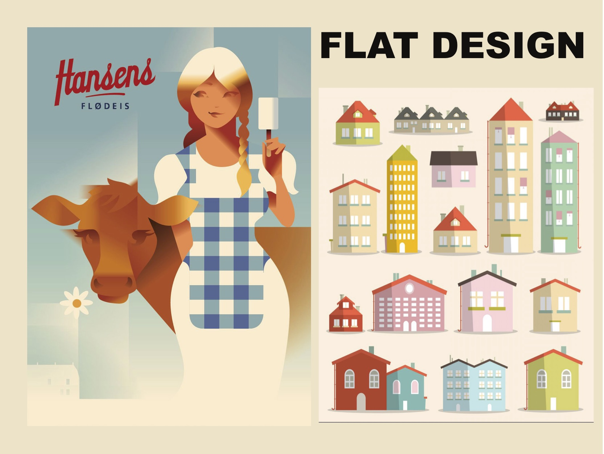

Tema 1: Grundlæggende Web
Responsive site v2
I det her tema, fik vi uddelt nogle forskellige stilarter i grupper. Jeg fik flat design og vi skulle derefter kode en hjemmeside ved hjælp af HTML og CSS. Vi begyndte derefter at researche på vores tildelte stilart og skulle, som det første lave et moodboard til det. Vi lavede moodboardet individuelt ved hjælp af InDesign - som skulle vise at man havde fået en forståelse for ens tildelte stilart.
Vi fik et layout diagram vi skulle kode efter, men vi skulle også lave et splash billede samt moodboard af vores stilart, som kan ses på billederne ude i siden
Vi skulle også lave et styletile ud fra research, øvelser og skitser. Vi skulle vælge skrifter, stil og ikoner, som skulle fremgå i en side for sig i vores stilartsite.
Stilartsite v2


Det øverste billede viser mit moodboard over Flat Desgn og det nederste er mit færdige splash billede, som vi skulle bruge til vores stilartssite.